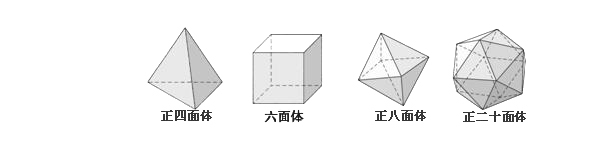
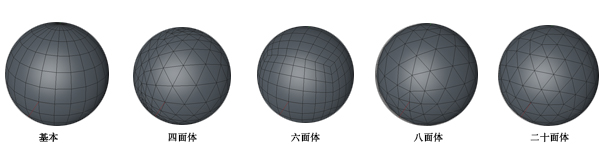

<!DOCTYPE html>
<html lang="en">

<head>
  <meta charset="UTF-8">
  <meta name="viewport" content="width=device-width, initial-scale=1.0">
  <meta http-equiv="X-UA-Compatible" content="ie=edge">
  <link rel="stylesheet" href="../../css/normalize.css">
  <link rel="stylesheet" href="../../css/styles/agate.css">
  <link rel="stylesheet" href="../../css/dark.css">
  <script src="../../js/jquery-3.2.1-compressed.js"></script>
  <script src="../../js/highlight.pack.js"></script>
  <script src="../../js/index.min.js"></script>
  <title>对象</title>
</head>

<body>
  <aside id="sidebar">
    <section id="catalog">
      
      目录
    </section>
  </aside>
  <div id="showCatalog">
    
  </div>
  <article id="container">
    <hgroup>
      <h1 id="title">对象</h1>
    </hgroup>
    <section>
      <h2>球体</h2>
      <p>
        创建一个参数化的球体模型。
        <h3>类型</h3>
        球体构建类型，可选择：
        <ul>
          <li>标准</li>
          <li>四面体</li>
          <li>六面体</li>
          <li>八面体</li>
          <li>二十面体</li>
          <li>半球体</li>
        </ul>
        <figure>
          
          
        </figure>
        <h3>理想渲染</h3>
        当球体还是参数化物体（即非可编辑对象）的时候，理想渲染可以使得渲染出来的物体，无论分段选择多少，都保持一个圆滑的圆形。取消勾选后，渲染效果和编辑时的效果一致。
      </p>
    </section>
    <section class="refer">
      <h2>参考文献</h2>
    </section>
  </article>
</body>

</html>